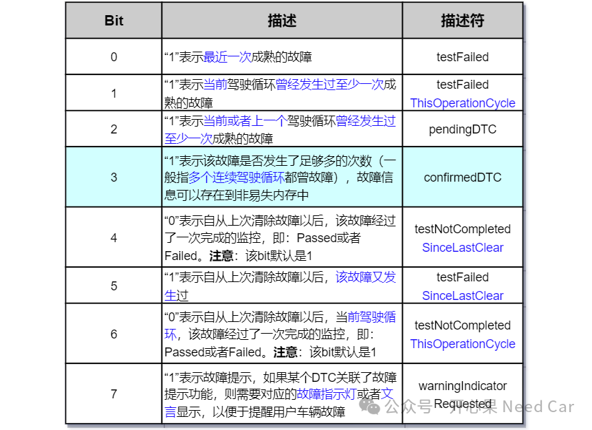
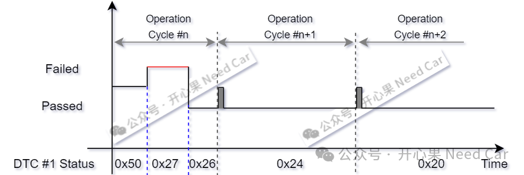

开心果 Need Car · 2024-07-19T06:39:00+08:00 · 微信原文
1、DTC Status

对于DTC Status，bit 3(confirmedDTC)是理解本文问题的核心。按照规范的解释，bit 3存在的目的：表征故障信息是否可以存储到非易失内存，即：bit3 == 1时，将故障信息存储到非易失内存中。
（一）bit 3何时置位?
我们需要进一步思考的问题：什么条件下，bit 3置位（==1）呢？按照规范解释，当故障次数达到确认阈值（confirmation threshold）时，bit 3置位，那么，怎么理解confirmation threshold呢？理解confirmation threshold，就不得不提到Trip Counter。
Trip Counter：记录故障发生的操作循环（Operation Cycle）次数。举例：如果两个驾驶循环（driving cycle）均发生故障，则Trip Counter累加2。
对应实际诊断需求，一般会约束每个DTC对应的confirmation threshold参数，比如：confirmedDTCLimit = 1、3、5...这个参数本质就是Trip Counter。如果DTC #1的confirmedDTCLimit = 3，也就意味着，3个连续的驾驶循环均发生了故障时，bit 3由0变成1。

Operation Cycle #n：
1、程序没有完成一次诊断监控之前，DTC #1的故障状态为0x50；
2、某一个时刻，发生了一次故障，且故障成熟，DTC #1的故障状态为0x27。由于trip counter没有到3，所以bit 3依然是0；
3、当故障消失后，DTC #1的故障状态为0x26，即：bit 0由1变成0.
Operation Cycle #n+1：
1、由于该驾驶循环一直没有发生故障，所以，bit 1 = 0，DTC #1的故障状态变为0x24。但是，bit2依然为1，表示上一个驾驶循环曾发生过故障；bit5也依然为1，表示上次清除该故障后，发生过故障。bit 5可以这样理解，只要该DTC没有被$14服务清除或者老化（aging）,该bit位会一直位置。
Operation Cycle #n+2：
1、由于该驾驶循环一直没有发生故障，且Operation Cycle #n+1也没有发生故障，所以，bit 2 = 0，DTC #1的故障状态变为0x20。
往期精彩回顾